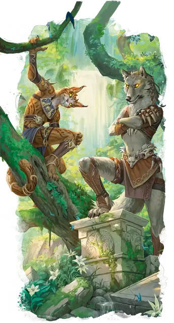

Владыка зверей
Animal Lord
Средний Небожитель, Нейтральный

Класс Защиты 19 Инициатива +19 (29)
Хиты 323 (34к8 + 170)
Скорость 60 футов, Плавания 60 футов, Полёта 60 футов (парит)
| мод | спас | ||
|---|---|---|---|
| СИЛ | 24 | +7 | +7 |
| ЛОВ | 25 | +7 | +7 |
| ТЕЛ | 20 | +5 | +11 |
| мод | спас | ||
|---|---|---|---|
| ИНТ | 19 | +4 | +4 |
| МДР | 23 | +6 | +12 |
| ХАР | 22 | +6 | +6 |
Сопротивление урону Излучение, Некротический, Огонь, Психический, Холод
Иммунитеты Испуганный, Очарованный, Ошеломлённый
Чувства пассивное Восприятие 28, Истинное зрение 120 футов
Языки Все
Опасность 20 (25 000 опыта; БВ +6)
Особенности
Владыка зверей. Каждый владыка зверей представляет собой один из архетипов на выбор Мастера: Собиратель, Охотник или Мудрец. Архетип определяет некоторые умения и особенности этого блока статистики.
Легендарное сопротивление (4/день). Если владыка зверей проваливает спасбросок, он вместо этого может в нём преуспеть.
Владычествующее присутствие. Спасбросок Мудрости: Сл 20, каждый враг, начинающий свой ход в 30-футовой Эманации, исходящей от владыки. Провал: Цель подвергается одному из следующих эффектов:
Заворожена (только Собиратель). Цель Очарована до конца её следующего хода. Пока цель Очарована таким образом, она также Недееспособна.
Устрашена (только Охотник). Цель Испугана до конца её следующего хода.
Запутана (только Мудрец). Цель получает 10 (3к6) Психического урона, а также магическим образом сбита с толку до конца своего следующего хода. Сбитая с толку цель вычитает 1к4 из результатов своих спасбросков.
Сопротивление магии. Владыка совершает с Преимуществом спасброски от заклинаний и прочих магических эффектов.
Действия
Мультиатака. Владыка зверей совершает две атаки Раздиранием или Сияющим лучом в любой комбинации и использует Звериный дух.
Раздирание. Бросок рукопашной атаки: +13, досягаемость 5 фт. Попадание: 14 (2к6 + 7) Рубящего урона плюс 7 (2к6) Силового урона.
Сияющий луч. Бросок дальнобойной атаки: +12, дистанция 120 фт. Попадание: 20 (4к6 + 6) урона Излучением.
Звериный дух. Владыка призывает духа зверя; дух набрасывается на существо, а затем исчезает. Спасбросок Ловкости: Сл 20, одно видимое владыкой существо в пределах 120 футов. Провал: 28 (4к10 + 6) урона Излучением. Успех: Только половина урона. Провал или успех: Создаётся один из следующих эффектов:
Укрепление (только Собиратель). Владыка получает 20 Временных хитов.
Цель охоты (только Охотник). Владыка совершает с Преимуществом броски атаки по этой цели до начала своего следующего хода.
Докучливый рой (только Мудрец). Цель совершает с Помехой броски атаки и проверки характеристик до конца своего следующего хода.
Сотворение заклинаний. Владыка зверей сотворяет одно из следующих заклинаний, не нуждаясь в Материальных компонентах (заклинательная характеристика — Мудрость, Сл спасброска заклинаний 20):
Неограниченно: Дружба с животными, Почтовое животное, Разговор с животными
2/день каждое: Высшее восстановление, Пробуждение разума
1/день каждое: Превращение в животных, Солнечный ожог
Бонусные действия
Перевоплощение. Владыка либо перевоплощается в своё животное воплощение Огромного размера или меньше, либо перевоплощается в Гуманоида Среднего или Маленького размера, либо возвращается в свой истинный облик. Его статистика, кроме размера, не меняется в зависимости от формы. Снаряжение, которое он носит или несёт, не трансформируется.
Легендарные действия
У этого существа есть 3 использования Легендарных действий; оно может немедленно после окончания хода другого существа потратить одно использование, чтобы совершить одно из следующих действий. Существо восполняет все потраченные использования в начале каждого своего хода.
Звериный удар. Владыка перемещается на расстояние плоть до своей Скорости, не Провоцируя атак, и совершает одну атаку Раздиранием.
Сияющий удар. Владыка совершает одну атаку Сияющим лучом.
Бонус мастерства +6
Среда обитания Звериные земли
Сокровища Реликварные
Владыка зверей
Бессмертные регенты дикой природы
Владыки зверей — это бессмертные духи легендарных животных. Они служат божественными покровителями животных своего вида и предстают в облике, сочетающем черты Гуманоида и защищаемого ими зверя. Зачастую они превращаются в гигантские, идеализированные версии своих подопечных — правда, с пылающими глазами. При общении с Гуманоидами они порой принимают вид человекоподобных существ с едва уловимыми звериными чертами. Каким бы ни был их облик, владыки сохраняют повадки и склонности своих прототипов, — но смягчённые их разумом и опытом.
Большинство владык зверей обитает в Звериных землях, но иногда они наведываются в Страну фей или иные идиллические края. На Материальный план они выбираются редко, делая исключение, лишь когда миру грозит природная катастрофа или бесчисленным животным угрожает гибель.
Среди наиболее известных владык — покровители кошачьих, ястребов, ящериц и волков, но существуют владыки для всех видов зверей. Некоторые даже воплощают существ, редких или вымерших на Материальном плане, — например мегафауну или динозавров. Своей божественной силой владыки могут призывать призрачных зверей, направлять духовную энергию и проявлять способности, связанные с одним из трёх основных архетипов: собиратели, охотники или мудрецы. Эти силы соответствуют личности владыки и чертам того существа, на которое он походит.
Совершите бросок по таблице «Облик владыки зверей» для вдохновения или определите сами, на какое создание он похож.
Облик владыки зверей
| 1к10 | Собиратель | Охотник | Мудрец |
| 1 | Буйвол | Акула | Ворона |
| 2 | Заяц | Барсук | Кит |
| 3 | Капибара | Богомол | Койот |
| 4 | Карп | Волк | Лосось |
| 5 | Медведь | Змея | Мышь |
| 6 | Олень | Кошка | Паук |
| 7 | Петух | Крокодил | Слон |
| 8 | Пчела | Мангуст | Сова |
| 9 | Слизень | Нетопырь | Черепаха |
| 10 | Стервятник | Ястреб | Ящерица |